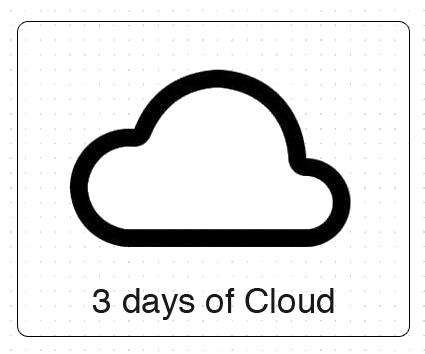
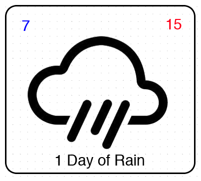
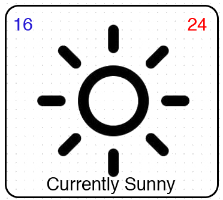

Our group consits of:
Our chosen smart watch application is a simplistic weather forecasting tool. We understand that there is an abundance of weather related smart apps out on the market; however, this app will be unique from others, as it will present the weather data differently from related applications. Our apps focus point will be only one weather type at a time, which is selected by the user and interchangeable by a swipe across the screen. The idea here is for the user to select a weather of their choice, see if that weather is currently occurring and how long it will last for, or when from this moment in time it will occur next.
After searching the market place we understand that there is a similar app available however we will approach the build at a much more simplistic approach to avoid an information cluster/overload at the users mental expense. This is especially important for a smart watch application, as the screen size is minimal. Our prediction is that simplicity will prevail, resulting in a positive user experience.
Why a weather app of this nature? Almost all weather apps today focus on the day of the week and the weather occurring on that day. This is the most common way weather has been presented to us for all of time. So we’ve decided to approach this from a different angle and flip that presentation on its head, having the focus be on the weather rather than the day. We believe this could be refreshing to the user and give a lot of information in a very simple, easy to understand manner.
As a quick example; say UserX wants to paint his garden shed one afternoon and he is worried it will rain the next day before the paint has properly sealed. Instead of checking a weather app for the next coming days forecast in search of rain, he simply opens our app, scrolls to “sunshine” or something dry and this will immediately tell him the information he needs. Also note that this is all in a positive context, he wants sunshine so looks for sunshine, instead of wanting sunshine but looking for rain.
Below are some very early designs of how the app may look. These are subject to change and most likely will.
  The weather data for our app will be pulled straight off the JSON data provided by the free Yahoo weather API. The data will be stored and used locally by the app program and updated as needed. The emulator will take care of all the control functions for the smart watch, things such as screen taps, swipes, button presses, current date and times as well as handling the audio and the display. The application will take care of processing the weather data and creating the displayed messages with a combination of graphics and text.
We will use Git as our chosen version control system throughout the entirety of this project. Git is already widely used in the community by developers, and is a trusted service. It is supported by over 200 programming languages and has proven to be a steady and reliable whilst remaining simple and easy to use. Git offers free user accounts, this allows the creation of unlimited repository’s from which we can clone, create branches, browse history and commit changes. Not to mention the robust security through SSL, HTTPS data transmission, also it provides easy access via a mobile device.
As two members of our group already have Git accounts it makes sense to use the service, and the free version allows up to 5 collaborators, which caters for us. The abundance of tutorials and help online will ensure that any member of the group with little or no experience of Git can quickly learn how to use the powerful platform.
In addition to this each group member will store their own back ups on either their own laptop/PC or a hard drive.
Our Git public repoitory can be found here.
The programming language we will use is JavaScript. We will use JavaScript because it is the required language specified in the assignment brief. JavaScript is one of the most simple, versatile and effective languages used to extend functionality in websites, which is beneficial to us as the goal is to run our application through the browser and an emulator. JavaScript is known for being relatively easy to learn (although this is a matter of opinion), so this could potentially aid the development process. In conjunction with raw JavaScript we will make much use of jQuery and any desirable plug-ins. A similar object-orientated programming structure will be in our favor given pervious experience of the group.
The visual side of the app will fall together as a conjunction of JavaScript and HTML, specifically the canvas element. No one in our group has any experience with the canvas element but have a good understanding of HTML, so we presume it shouldn’t be too taxing to learn.
The editor we will be using is atom. Firstly Atom is a cross platform IDE which benefits our group as we all work on different operating systems. Atom is also free to download and was developed by the GitHub community. Because of this we can seamlessly pull and push from the Git repository as well as use a lot of Git specific features. Atom can be used as a Git commit editor and comes with a package that allows this which will be very useful. Just like most good IDE’s, Atom has a lot of features to aid the entire development process such as, auto complete, find and replace, multiple viewing panes, and plenty of packages at the users disposable. Less importantly but also nice to note is that Atom has a very clean and visually pleasing environment to work in. Atom is highly customizable not only visually but also mechanically; most desired features are available via packages to download to set up exactly what you need, e.g. a complier of some sorts.
It is probably important to note that Atom is a very new editor/IDE, which could sound a few mental alarms. However it is highly supported and updated frequently which is reassuring. The group understands that it could’ve chosen a more established IDE with a solid track record, however the features and great usability offered in Atom have persuaded us to give it a go with confidence and high hopes.
To begin with we shall make use of all debugging features within our chosen IDE, Atom. Atom offers a downloadable package called the Hash Rocket. Hash Rocket is an inline code debugger that lets you watch the output of variables on comments. Hash Rocket is an easy way to debug JavaScript as well as other languages. Hash Rocket also has a real time mode available.
From there, after much research, we will make use of FireBug. Firebug is an extension of the web-browser Firefox, it makes editing and debugging CSS, HTML and JavaScript relatively straight forward. The features that are offered by FireBug are definitely worth the time to learn how to use. Such features that will be useful for us include the ability to inspect and edit HTML instantly; this feature also highlights changes made making it easier to see what exactly is happening. Another feature is the CSS tool, this helps fine tunes CSS sheets and also preview new styles on the spot. Along side many other great features such as the JavaScript ones, our group believes that FireBug will definitely be an effective tool to help us debug all of our work out of the Atom IDE.
W3Schools provides HTML validation which we shall use and regularly check the state of our HTML file. JSLint is also a familiar tool for the group used as a sorts of JavaScript validator.
| Task | Assignment 2 (Monday the 23rd of May) | Group member for task | Due Date | Estimated hours |
|---|---|---|---|---|
| 1 | Fully designed plan pen/paper copy web app and learn required skills. | Bayley, Joe | Complete | 3 |
| 2 | Emulator developed with functionality that can support some html. (doesn't have to have all browser support at this stage). | Reuben, Joe | 29th April | 12 |
| 3 | The CSS and HTML template for the web app completed (rough outline). | Bayley | 2nd May | 4 |
| 4 | Geo-Location | Blake, Reuben | 4th May | 4 |
| 5 | Implementation of the jQuery swipe function. | Bayley | 8th May | 5 |
| 6 | The animation choice of all weather symbols. | Joe | 10th May | 2 |
| 7 | Group progress evaluation 1st(May). | Blake | 11th May | 2 |
| 8 | Simple pulling of data from the (API) and parsing. | Blake, Bayley | 1st May | 5 |
This table is just estimation and may change as development continues.
Working through the costs that we may come across assuming we were a small startup group, we found that the costs were going to be quite large. To start with basic software requirements, the IDE/editor that we would use would be Atom. We would use atom as its free software and is fairly straightforward to use. Another good thing about Atom is that it has the version control system we are using backed into it. The version control we plan on using is GitHub, which is also free. With GitHub you can also get a small organization package that costs $25 per month, which would lead to $300 for a year.
The API we are planning on using for data to run the app is again for free, so no costs there. Moving to hardware, each member in the group would require their own laptop. Lets say a MacBook Pro each. A MacBook pro currently costs around $2,399 RRP in New Zealand, so four of these will cost $9596. Also with hardware, there may need to be some accessories such as mice for the laptops and hard drives, $300 at least. A small office space based in Dunedin that would be able to fit 4 people, roughly ranges between $7000 and $11000 per annum.
Office furniture will also be needed, which could cost around $1000 to $2000 to fill the office. Renewables for the office such as coffee, stationary, toilet paper etc., come at a cost around $500 per year. Also with utility costs for the office, the average costs would be $3000, and then with Internet on top of that. Last of all, each member would require some sort of income to live on, we believe that for a startup, a reasonable income per person would be $40,000 each, which comes to $160,000 in total. Overall cost for the startup company roughly with no other potential costs taken into account would roughly be around a staggering $186,396 for a whole year.
Written by: Joe Benn(#1790302), Reuben Storr(#7412087), Blake Carter(#7194569) and Bayley Millar(#2940325)